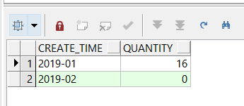

- 按月
(1) 简单分组查询
-- 分组后查询数据：仅 1 月份 6 条，2 月份因为不存在记录，没有显示 | |
SELECT to_char(r.sys_created_on, 'yyyy-mm') AS create_time, count(*) AS quantity | |
FROM table_r r,table_g g | |
WHERE r.assignment_group = g.sys_id | |
AND g.name = 'Provisioning Ops' | |
AND r.sys_created_on BETWEEN | |
TO_DATE('2019-01-19 00:00:00', 'YYYY-MM-DD HH24:MI:SS') AND | |
TO_DATE('2019-02-18 23:59:59', 'YYYY-MM-DD HH24:MI:SS') | |
GROUP BY to_char(r.sys_created_on, 'yyyy-mm') | |
ORDER BY to_char(r.sys_created_on, 'yyyy-mm'); |

（2）构建虚拟月份表
-- 虚拟月份 | |
SELECT TO_CHAR(ADD_MONTHS(TO_DATE(substr('2019-01-19 23:59:59', 1, 7), 'yyyy-MM'), ROWNUM - 1), | |
'yyyy-MM') AS create_time | |
FROM DUAL | |
CONNECT BY ROWNUM <= | |
months_between(TO_DATE(substr('2019-02-18 23:59:59', 1, 7), 'YYYY-MM'), | |
TO_DATE(substr('2019-01-19 23:59:59', 1, 7), 'yyyy-MM')) + 1; |
（3）连接后分组查询：
-- 左连接 | |
SELECT a.create_time as create_time, nvl(b.quantity, 0) as quantity | |
FROM (SELECT TO_CHAR(ADD_MONTHS(TO_DATE(substr('2019-01-19 23:59:59', 1, 7), | |
'yyyy-MM'), | |
ROWNUM - 1), | |
'yyyy-MM') AS create_time | |
FROM DUAL | |
CONNECT BY ROWNUM <= | |
months_between(TO_DATE(substr('2019-02-18 23:59:59', 1, 7), | |
'YYYY-MM'), | |
TO_DATE(substr('2019-01-19 23:59:59', 1, 7), | |
'yyyy-MM')) + 1) a | |
LEFT JOIN (SELECT to_char(r.sys_created_on, 'yyyy-mm') AS create_time, | |
count(*) AS quantity | |
FROM table_r r, table_g g | |
WHERE r.assignment_group = g.sys_id | |
AND g.name = 'Provisioning Ops' | |
AND r.sys_created_on BETWEEN | |
TO_DATE('2019-01-19 00:00:00', 'YYYY-MM-DD HH24:MI:SS') AND | |
TO_DATE('2019-02-18 23:59:59', 'YYYY-MM-DD HH24:MI:SS') | |
GROUP BY to_char(r.sys_created_on, 'yyyy-mm') | |
ORDER BY to_char(r.sys_created_on, 'yyyy-mm')) b | |
ON a.create_time = b.create_time | |
ORDER BY a.create_time |

- 按周
(1) 简单分组查询
-- 分组查询：仅有 2 周存在记录，2019-01-14 和 2019-01-21 分别为这两周的周一 | |
SELECT to_char(next_day(r.sys_created_on + 15 / 24 - 7, 2), 'YYYY-MM-DD') create_time, | |
count(*) quantity | |
FROM table_r r, table_g g | |
WHERE r.assignment_group = g.sys_id | |
AND g.name = 'Provisioning Ops' | |
AND r.sys_created_on BETWEEN | |
TO_DATE('2019-01-19 00:00:00', 'YYYY-MM-DD HH24:MI:SS') AND | |
TO_DATE('2019-02-18 23:59:59', 'YYYY-MM-DD HH24:MI:SS') | |
GROUP BY to_char(next_day(r.sys_created_on + 15 / 24 - 7, 2), 'YYYY-MM-DD') | |
ORDER BY to_char(next_day(r.sys_created_on + 15 / 24 - 7, 2), 'YYYY-MM-DD') |

(2) 构建虚拟周数表：
-- 虚拟周数 | |
SELECT to_char(trunc(TO_DATE('2019-01-19 00:00:00', 'YYYY-MM-DD HH24:MI:SS') + | |
(ROWNUM - 1) * 7, | |
'd') + 1, | |
'yyyy-MM-dd') AS create_time | |
FROM DUAL | |
CONNECT BY ROWNUM <= | |
(TRUNC(TO_DATE('2019-02-18 00:00:00', 'YYYY-MM-DD HH24:MI:SS'), | |
'IW') - | |
TRUNC(TO_DATE('2019-01-19 23:59:59', 'YYYY-MM-DD HH24:MI:SS'), | |
'IW')) / 7 + 1 |

(3) 连接后分组查询：
-- 左连接 | |
SELECT a.create_time as create_time, nvl(b.quantity, 0) as quantity | |
FROM (SELECT to_char(trunc(TO_DATE('2019-01-19 00:00:00', | |
'YYYY-MM-DD HH24:MI:SS') + | |
(ROWNUM - 1) * 7, | |
'd') + 1, | |
'yyyy-MM-dd') AS create_time | |
FROM DUAL | |
CONNECT BY ROWNUM <= | |
(TRUNC(TO_DATE('2019-02-18 00:00:00', | |
'YYYY-MM-DD HH24:MI:SS'), | |
'IW') - TRUNC(TO_DATE('2019-01-19 23:59:59', | |
'YYYY-MM-DD HH24:MI:SS'), | |
'IW')) / 7 + 1) a | |
LEFT JOIN (SELECT to_char(next_day(r.sys_created_on + 15 / 24 - 7, 2), | |
'YYYY-MM-DD') create_time, | |
count(*) quantity | |
FROM table_r r, table_g g | |
WHERE r.assignment_group = g.sys_id | |
AND g.name = 'Provisioning Ops' | |
AND r.sys_created_on BETWEEN | |
TO_DATE('2019-01-19 00:00:00', 'YYYY-MM-DD HH24:MI:SS') AND | |
TO_DATE('2019-02-18 23:59:59', 'YYYY-MM-DD HH24:MI:SS') | |
GROUP BY to_char(next_day(r.sys_created_on + 15 / 24 - 7, 2), | |
'YYYY-MM-DD') | |
ORDER BY to_char(next_day(r.sys_created_on + 15 / 24 - 7, 2), | |
'YYYY-MM-DD')) b | |
ON a.create_time = b.create_time | |
ORDER BY a.create_time |

参考：
周数转日期： https://www.cnblogs.com/Innogen/p/8269092.html
构建虚拟表：https://www.cnblogs.com/LLSutdy/p/7998322.html
整体参考：https://blog.csdn.net/weixin_36150793/article/details/81607574
纠正：
按周查询那条 sql 测试有问题，本地测时发现如下问题：
select to_char(next_day(TO_DATE('2019-02-17 08:59:00', 'YYYY-MM-DD HH24:MI:SS') + 15 / 24 - 7, 2), 'YYYY-MM-DD'), | |
to_char(next_day(TO_DATE('2019-02-17 09:00:00', 'YYYY-MM-DD HH24:MI:SS') + 15 / 24 - 7, 2), 'YYYY-MM-DD'), | |
dbtimezone | |
from dual; |

本人猜测应该算法还是这个算法，只是和时区关联上了，因为本公司 DB 时区统一采用 UTC 时间（=GMT 时间，其实他们还是有区别的），所以找了一个周的交叉点用笨方法测试了一下（就是一个个改数字，好笨啊，毕竟算法没看懂），sql 如下：
select to_char(next_day(TO_DATE('2019-02-16 23:59:59', 'YYYY-MM-DD HH24:MI:SS') + 0 / 24 - 7, 2), 'YYYY-MM-DD') as a1, | |
to_char(next_day(TO_DATE('2019-02-17 00:00:00', 'YYYY-MM-DD HH24:MI:SS') + 0 / 24 - 7, 2), 'YYYY-MM-DD') as a2, | |
to_char(next_day(TO_DATE('2019-02-17 02:00:00', 'YYYY-MM-DD HH24:MI:SS') + 0 / 24 - 7, 2), 'YYYY-MM-DD') as a3, | |
to_char(next_day(TO_DATE('2019-02-17 04:00:00', 'YYYY-MM-DD HH24:MI:SS') + 0 / 24 - 7, 2), 'YYYY-MM-DD') as a4, | |
to_char(next_day(TO_DATE('2019-02-17 06:00:00', 'YYYY-MM-DD HH24:MI:SS') + 0 / 24 - 7, 2), 'YYYY-MM-DD') as a5, | |
to_char(next_day(TO_DATE('2019-02-17 08:00:00', 'YYYY-MM-DD HH24:MI:SS') + 0 / 24 - 7, 2), 'YYYY-MM-DD') as a6, | |
to_char(next_day(TO_DATE('2019-02-17 10:00:00', 'YYYY-MM-DD HH24:MI:SS') + 0 / 24 - 7, 2), 'YYYY-MM-DD') as a7, | |
to_char(next_day(TO_DATE('2019-02-17 12:00:00', 'YYYY-MM-DD HH24:MI:SS') + 0 / 24 - 7, 2), 'YYYY-MM-DD') as a8, | |
to_char(next_day(TO_DATE('2019-02-17 14:00:00', 'YYYY-MM-DD HH24:MI:SS') + 0 / 24 - 7, 2), 'YYYY-MM-DD') as a9, | |
to_char(next_day(TO_DATE('2019-02-17 16:00:00', 'YYYY-MM-DD HH24:MI:SS') + 0 / 24 - 7, 2), 'YYYY-MM-DD') as a10, | |
to_char(next_day(TO_DATE('2019-02-17 18:00:00', 'YYYY-MM-DD HH24:MI:SS') + 0 / 24 - 7, 2), 'YYYY-MM-DD') as a11, | |
to_char(next_day(TO_DATE('2019-02-17 20:00:00', 'YYYY-MM-DD HH24:MI:SS') + 0 / 24 - 7, 2), 'YYYY-MM-DD') as a12, | |
to_char(next_day(TO_DATE('2019-02-17 22:00:00', 'YYYY-MM-DD HH24:MI:SS') + 0 / 24 - 7, 2), 'YYYY-MM-DD') as a13, | |
to_char(next_day(TO_DATE('2019-02-17 23:59:59', 'YYYY-MM-DD HH24:MI:SS') + 0 / 24 - 7, 2), 'YYYY-MM-DD') as a14, | |
to_char(next_day(TO_DATE('2019-02-18 00:00:00', 'YYYY-MM-DD HH24:MI:SS') + 0 / 24 - 7, 2), 'YYYY-MM-DD') as a15, | |
to_char(next_day(TO_DATE('2019-02-18 23:59:59', 'YYYY-MM-DD HH24:MI:SS') + 0 / 24 - 7, 2), 'YYYY-MM-DD') as a16, | |
dbtimezone | |
from dual; |

可以看到明显有个时间的跳变，正好和日期对上了！